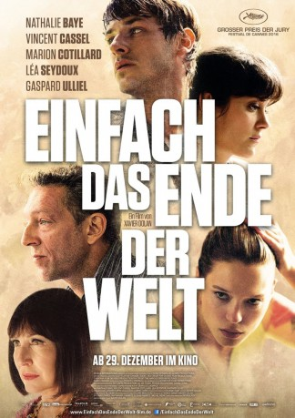

#6569 Einfach das Ende der Welt
Alternativ: It's Only the End of the World (Englischer Titel)
 
 IMDB-Wertung: 7.0 / 10
IMDB-Wertung: 7.0 / 10  Metascore: 0
Metascore: 0 
Louis (Gaspard Ulliel) hat es mit 34 Jahren zu einem erfolgreichen Schriftsteller gebracht, aber das ist nicht der wahre Grund weshalb er nach zwölf Jahren Abwesenheit wieder in seinen Heimartort zurückkehrt. Denn Louis ist mittlerweile sterbenskrank und hat nicht mehr lange zu leben. Deswegen will er seine Familie davon in Kenntnis setzen, doch das ist alles andere als leicht. Denn bei dem Familiennachmittag mit seiner Mutter (Nathalie Baye), seiner jüngeren Schwester Suzanne (Léa Seydoux), seinem älteren Bruder Antoine (Vincent Cassel) und dessen Frau Catherine (Marion Cotillard) reißen alte Wunden auf und kochen längst vergangene Fehden wieder hoch. Und die erhitzten Gemüter tun alles, um sich gegenseitig das Leben schwer zu machen, w��hrend niemand Louis ein offenes Ohr leihen will...
Jahr: 2016
Dauer: 99 Minuten
FSK:
Land: Kanada Studio: Weltkino FilmverleihTonspuren: DTS - ,
Untertitel: Deutsch,
Auflösung: 1080p (1920x1040) Größe: 6451 MB
Genre: Drama
Regisseur: Xavier Dolan
Drehbuch: Xavier Dolan
Soundtrack:
Darsteller:
- Nathalie Baye als La mère
 Vincent Cassel als Antoine
Vincent Cassel als Antoine Marion Cotillard als Catherine
Marion Cotillard als Catherine Léa Seydoux als Suzanne
Léa Seydoux als Suzanne Gaspard Ulliel als Louis
Gaspard Ulliel als Louis- Antoine Desrochers als Pierre Jolicoeur
- Théodore Pellerin als Antoine, 16-22 ans
- William Boyce Blanchette als Louis, 15 ans
- Sasha Samar als Chauffeur de taxi
- Arthur Couillard als Petit garçon - avion
- Emile Rondeau als Louis, 5-6 ans
- Jenyane Provencher als Jeune fille - trampoline
Datei: X:\2016(A-F)\Einfach das Ende der Welt (2016, FSK, 1920x1040).mkv seit 12.07.2017
Festplatte: HD 2016(A-Z)
 Es gibt insgesamt 147 Filme in der Gruppe '2016(A-F)'
Es gibt insgesamt 147 Filme in der Gruppe '2016(A-F)'